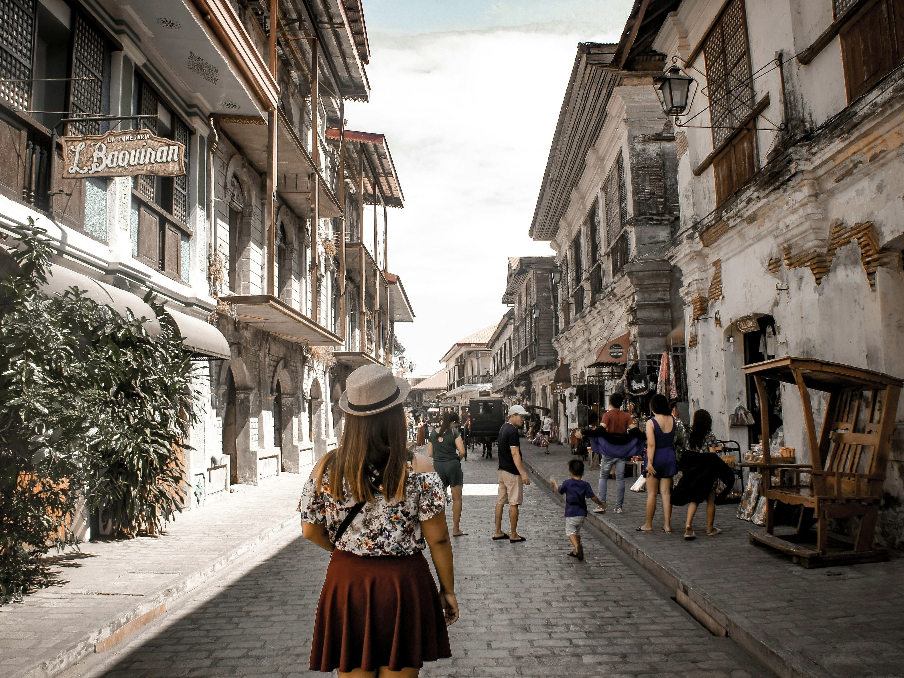
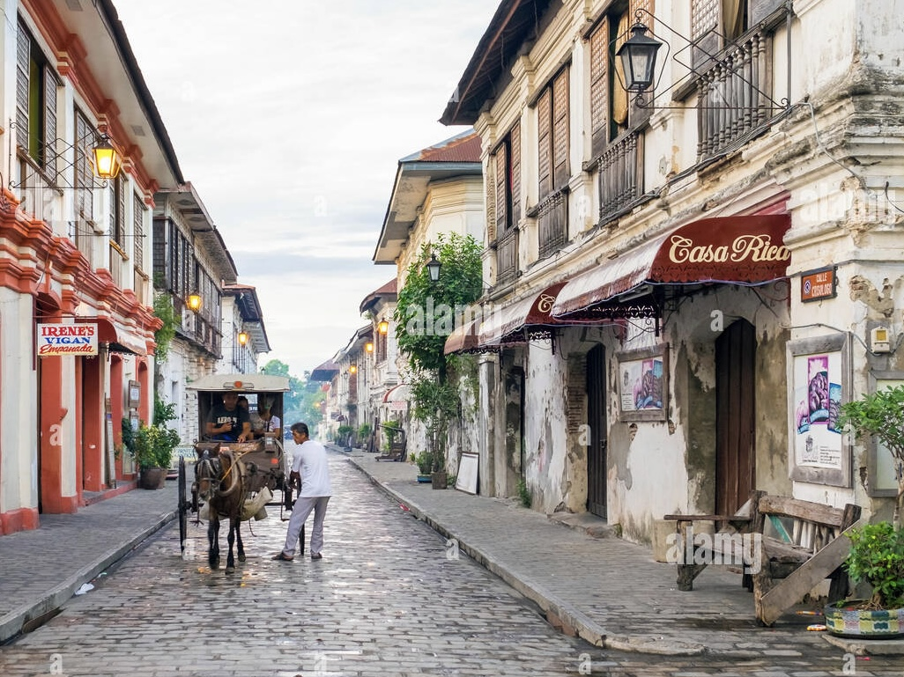
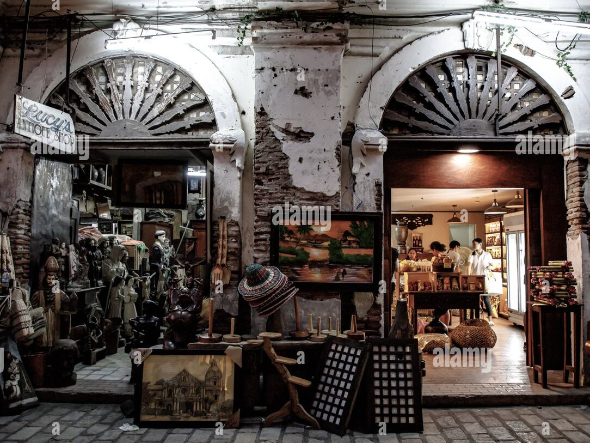
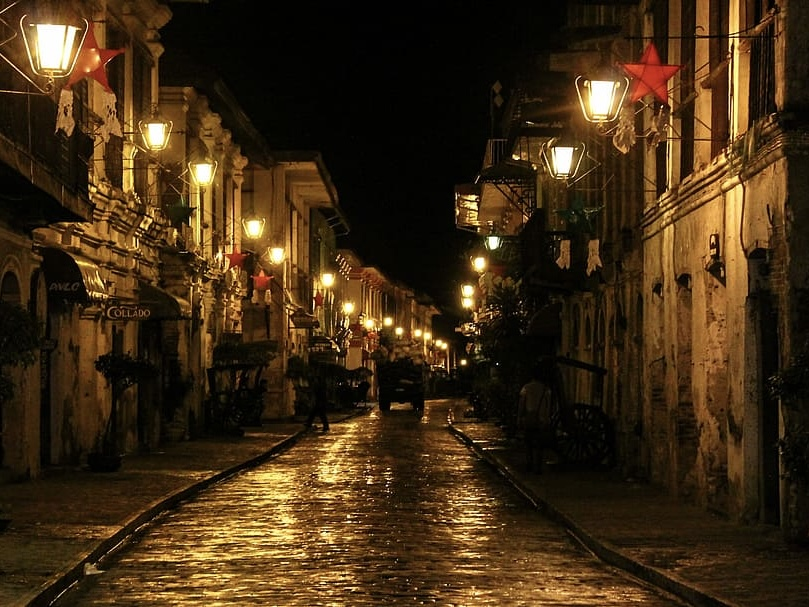
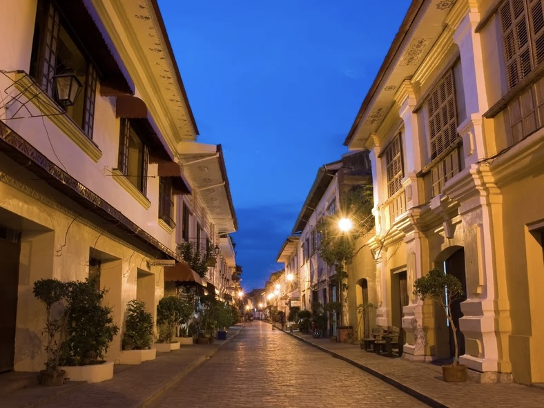
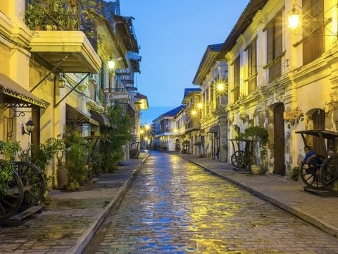
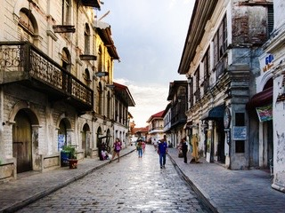

CALLE CRISOLOGO STREET, VIGAN
| Located | Famous For | Travel Hours From Manila | Activities |
|---|---|---|---|
| Vigan City, Ilocos Sur Philippines | Well-preserved Spanish colonial street, UNESCO World Heritage site. | Around 8-9 hours by bus or 1 hour by flight to Laoag, then 1.5 hours by van | Strolling, shopping, dining, cultural tours |








| Travel Tips |
|---|
|
Best Time to Visit The best time to visit Vigan is from November to April, during the dry season. This is when the weather is cooler and ideal for walking tours. |
|
How to Get There You can reach Vigan City by taking a bus from Manila, which takes around 8-9 hours. Alternatively, you can fly to Laoag and then take a van or bus to Vigan (about 1.5 hours). |
|
Where to Stay Stay in nearby heritage hotels or guesthouses that reflect the colonial charm of the city. Popular options include hotels along Calle Crisologo or in the city center for easy access to attractions. |
|
Experience the Night Market In the evenings, Calle Crisologo comes alive with food stalls and vendors. Enjoy the vibrant atmosphere and sample more local dishes while soaking in the colonial ambiance. |
|
Explore the Heritage Houses Take the time to visit the ancestral homes and museums along Calle Crisologo, such as the Syquia Mansion and the Crisologo Museum, to learn about the history and culture of the area. |
|
Enjoy Local Cuisine Try local delicacies such as "empanada" (a savory pastry), "longganisa" (local sausage), and "bagnet" (crispy pork belly) from street vendors and local eateries. |
|
Shop for Souvenirs Calle Crisologo is famous for its souvenirs, including handmade crafts, woven products, and local delicacies. Don’t forget to haggle for the best prices! |